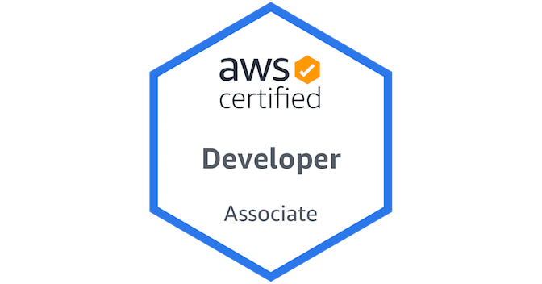
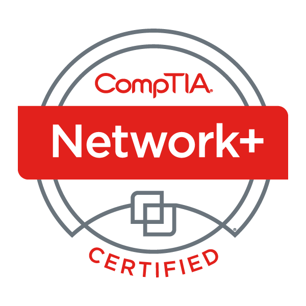
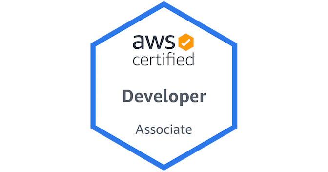
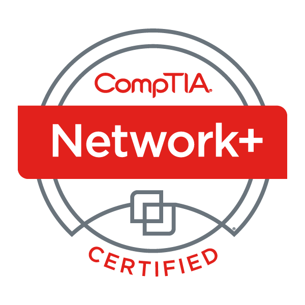

About Me and This Resume
Hello my name is Noah and i am an aspiring fullstack developer with with an interst in just learning more and creating. This is the first project i have ever made and hosted in the cloud and I wanted to make sure that I constantly update it with my learnign journey. It is made with simply with HTML, CSS and JavaScript. I have also created a CI/CD pipeline with Github actions to update my code on the server anytime that i push to the repository so that updating my resume is easy. Keeping programming simple and automate when you can is a core philosophy of mine when it comes to working on projects. Here are the skills and projects that i have worked on thus far on my learning journey
Skills
-
Support:Helpdesk: escalation and documentation on ticketing systems (Jira and ServiceNow), customer service support (email, phone, and in person). Reimaged laptops and desktops, deployed workstations through intune in a workplace environment.
-
Hardware:Troubleshooting HP and cannon printers; general computer builds and repairs; hardware installations and swaps. RAID Arrays, RAM and CPU replacement. Ability to troubleshoot and narrow down problems regarding hardware.
-
Programming LangagesHTML, CSS, Tailwind JavaScript, React, Python, SQL, PHP, and NodeJs
-
Tools:Git, MySQL, Oracle Database, AWS, API's Active Directory, VMware, ServiceNow, Miscrosoft Suite, and Wireshark, Windows, Linux Ubuntu, iOS
-
Soft Skills:Communication, Teamwork and conflict resolution, Problem Solving, Empathy, Patience, Curiosity, Adaptability, Accountability, Time managment.
Experience
- Provided customer service to 30 customers a day. Talked to customers who needed technical support for their computers and active directory accounts.
- Alerted management team when a technical outage in the credit union occurred to ensure that the issue gets patched as efficiently as possible.
- Worked with colleagues in the event of a technical outage to minimize the call queue and effectively troubleshoot for a solution.
- Provide technical support to an organization of 500+ people whit a team of 11 on the service desk.
- Reimaged and provisoned laptops for users in our environment managed by intune and SCCM
- Focused on taking calls on the hotline and taking tickets in the service desk queue
- went to branch locations to troubleshoot hardware and replace equipment in the branchs
Education
George Mason University
- Earned an Bachelor's Degree from George Mason University in Information Technology with a concentration in database architecture and programming with over 120 credits.
- Worked on multiple software development projects in for learning purposes such as Event Bookie and Brows by Dino website
Projects
Cloud Resume
This is the cloud resume that you are reading right now. I have created this page with the intention of anyone being able to see my credentials as long as they have internet access. I decided to keep it simple with using the technologies above. I have a passion for cloud technology and wanted to utilize it in my first project to learn more about it. I used AWS technology such as S3, Cloudfront, Route 53, Lambda, Cloud Formation and API Gateway, and Dynamo DB to create this page with a counter for each person who visits my site. I also use Infrastructure as code (YAML) to create a blueprint for this page to automatically deploy me resources to the cloud. this page is updated anytime i push my code to github after passing some linting for my front end and backend by utilizing github actions I created this as my first page and i wanted to see if it would land me a job.
Word per Minute Game
This is the 2nd project that i have created, This is a word per minute game that i created to test out my skills with JavaScript. I thought that it would be fun to build since i was still new to development and wanted to try messing around more with the POST method using an API. This project uses the AWS platform similarly to my Cloud resume. I used S3, Cloudfront, Route 53, API Gateway, and Dynamodb. I also used a third party API to get the words to populate the words that appear on the screen. I made this project with the intention of learning and getting ready for my projects that i was getting ready to work on next.
Event Bookie
This is a cloud site that i made in college with some classmates for a class project. it was a cloud development class and it is the project that i had the most fun with due to collaboration, using newer technologies and the constant grind to meet deadlines. It was my idea to host the site using AWS and we used some new technologies. Some of these technologies include AWS Amplify, Dynamodb, etc. I decided to use React since we were thinking of the longevity of this project if we wanted to expand our project and reuse components. we also used tailwind to keep the blinders on us so that our themes stayed within a scope, allowing us to stick to a theme. I was responsible for the infrastructure and frontend portion of this project. and used a few different react libraries to help with the styling and convinience for the user.
Brows by Dino
This is another site that I was working on and made in college with the help of a team I created this site as a new in inspiration of starting a website for someones bussiness it was a microblading bussiness that sells products online we created an inventory system
My Portfolio Site
- Understands cloud architecture and how to host a highly available website. Able to write simple bash scripts on EC2 instances.
- Able to execute best practices on security such as private subnets, firewalls, and security groups.
- Understanding routing on Route 53 latency-based routing geolocation-based routing etc.
- able to host a static website on S3.